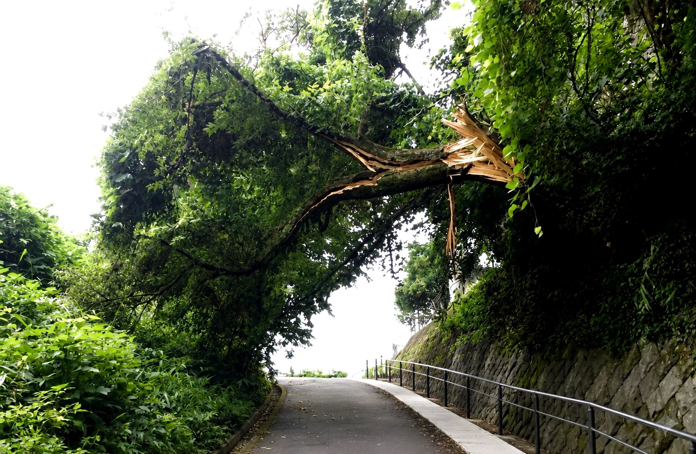

01
家屋・道路に近い木
強風や大雨で倒れた場合、建物、道路、車両、通行人へ影響する可能性があります。周辺環境を確認したうえで対応方法を検討します。
 株式会社ClearthForest Resource Company
株式会社ClearthForest Resource Company

SERVICE
倒れそうな木、家屋や道路に近い木、電線付近の木、山林内の危険木まで、現地の状況に合わせて安全な作業方法を検討します。
危険木伐採とは、倒木の恐れがある木や、家屋・道路・施設・電線などに影響する可能性のある木を、被害が発生する前に確認し、必要に応じて伐採・処理する作業です。
株式会社Clearthでは、倒れそうな木、傾いた木、枯れ木、山林内の危険木、道路や建物に近い支障木について、現地確認を行ったうえで安全な作業方法を検討します。
重機や林業現場での経験を活かし、伐採だけでなく、伐採後の搬出、処分、一次破砕、木質チップ化まで一貫してご相談いただけます。
WHO IT HELPS
一般住宅、山林所有者、法人企業、行政・施設管理者
FEATURE
危険木は見た目だけでは判断しにくい場合があります。早めの確認により、倒木や接触による被害を未然に防ぎやすくなります。
強風や大雨で倒れた場合、建物、道路、車両、通行人へ影響する可能性があります。周辺環境を確認したうえで対応方法を検討します。
内部が傷んでいる木や大きく傾いた木は、突然倒れるリスクがあります。山林内でも作業道や近隣施設に影響する場合は注意が必要です。
電線、倉庫、工場、公共施設の近くにある木は、伐採方法や作業範囲を慎重に確認する必要があります。電線や公共設備に近い場合は、必要に応じて関係機関と確認しながら対応方法を検討します。まずは現地状況をお聞かせください。
WHY CLEARTH
現場対応から再資源化、供給までを一体で考え、安心して相談できる体制を整えています。
木の状態、周辺環境、搬出条件を確認し、無理のない作業方法をご提案します。写真での事前相談も可能です。
伐採して終わりではなく、搬出、処分、一次破砕、木質チップ化まで、木材を資源として活用する流れもご相談いただけます。
一般住宅の支障木、山林所有者様の倒木リスク確認、法人施設や行政管理地の危険木まで、状況に応じて対応します。
CONSULTATION
木の状態や周辺環境が分かる写真を送っていただければ、危険木伐採・支障木伐採の相談内容を整理しやすくなります。
木全体の写真、根元の状態、家屋・道路・電線との距離、作業車両が入れる道の状況などが分かる写真があると、よりスムーズに確認できます。
写真はメールにてお送りいただけます。お問い合わせフォームからのご相談も可能です。
写真確認または現地確認後に、作業内容とお見積もりをご案内します。
倒木の恐れがある場合や、道路・建物へ影響している場合は、お早めにお電話でご相談ください。伐採後の木材の搬出・処分、木質チップ化までまとめてご相談いただけます。
CONTACT
倒れそうな木、家屋や道路に近い木、電線付近の木、山林内の危険木でお困りの方へ。現地確認から伐採、搬出、処分、木質チップ化まで、状況に合わせて最適な方法をご提案します。まずはお気軽にご相談ください。
対応エリア
広島県全域を中心に対応しております。近隣県についても対応可能な場合がありますので、お気軽にご相談ください。
現地確認・お見積りは無料です。現場状況やご相談内容を確認したうえで、最適な方法をご提案いたします。